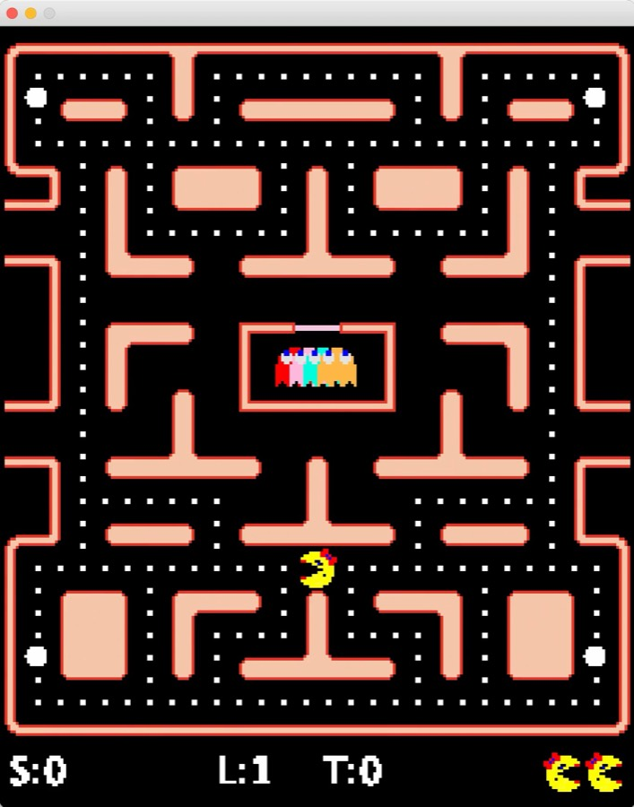
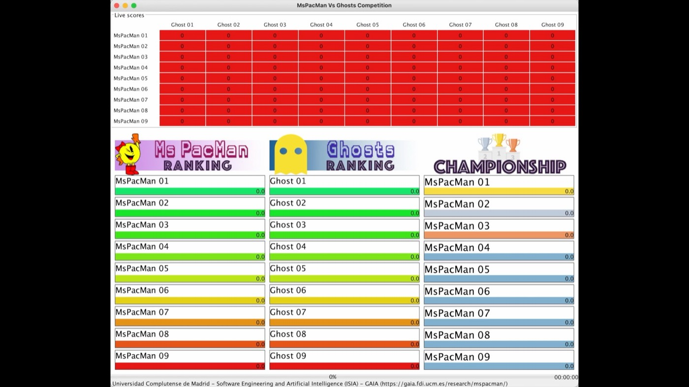
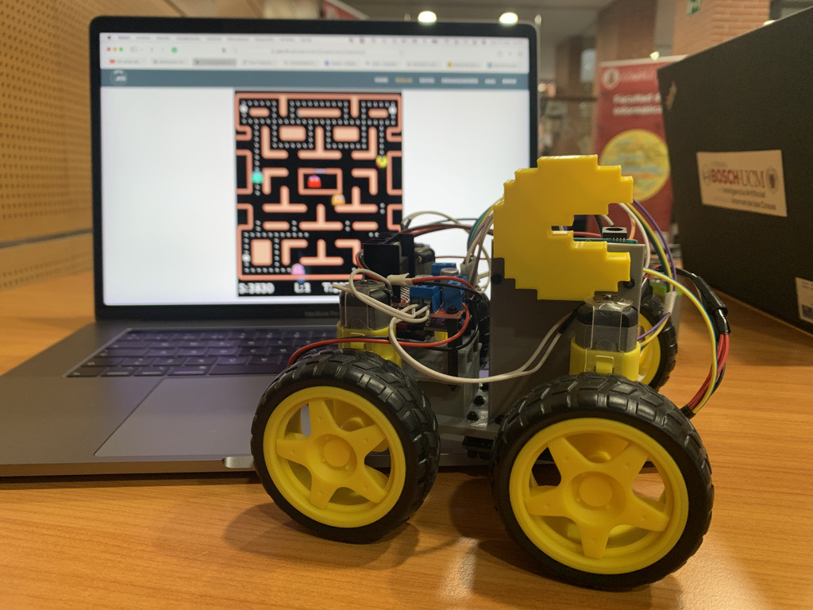
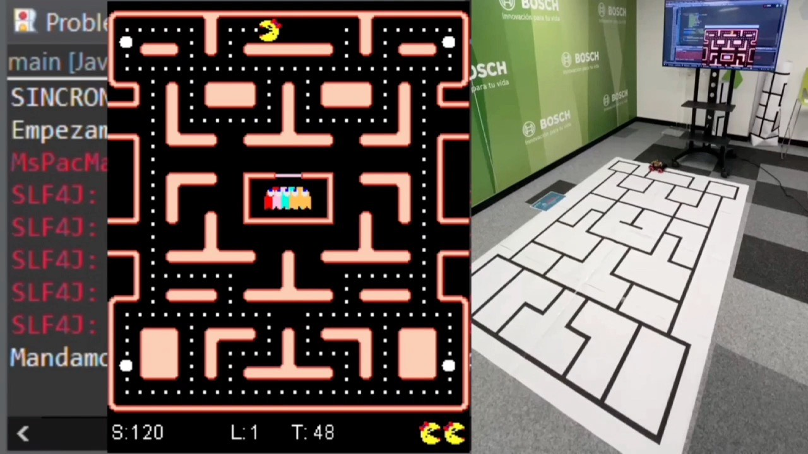

De qué va la asignatura
«Dotar a los estudiantes de la capacidad para aplicar técnicas simbólicas de Inteligencia Artificial a la creación de comportamientos inteligentes en el dominio de los videojuegos. Para ello, serán capaces de entender el proceso de adquisición, representación y uso del conocimiento.»
En Inteligencia Artificial se trabaja con dos familias de técnicas muy distintas. La subsimbólica (redes neuronales, aprendizaje profundo, modelos de lenguaje) aprende de los datos y es la que ha crecido en los últimos años. La simbólica representa el conocimiento de forma explícita y razona sobre él con reglas, estados, ontologías, casos o grados de verdad.
Un modelo de lenguaje no sabe explicar por qué eligió una jugada, cuesta mucho ejecutarlo a 60 fotogramas por segundo y no se puede corregir a mano cuando falla. Un comportamiento simbólico se puede leer y depurar, se ajusta con el diseñador delante y se ejecuta en microsegundos. Por eso la industria del videojuego sigue construyendo casi todos sus personajes así, y por eso la parte difícil de la asignatura no es programar, sino decidir qué conocimiento hace falta y cómo se escribe.
Qué vas a saber hacer al acabar
- Extraer el conocimiento de un dominio de juego a partir de la observación y del propio motor.
- Elegir la representación adecuada: estados, reglas, conjuntos borrosos, casos, árboles de búsqueda.
- Implementarla en Java sobre un motor que no controlas, con el reloj en contra.
- Medir si el comportamiento es bueno, y defender por qué.
Confusiones habituales
- Aquí el conocimiento se escribe, no se entrena: no es una asignatura de aprendizaje automático.
- El motor te lo dan hecho, así que no vas a programar un videojuego.
- Si sigues el curso no hay examen: la nota sale de lo que entregas y de cómo lo defiendes en clase.
Cómo funciona el curso
La asignatura es una sucesión de bloques de dos semanas. Cada bloque introduce una técnica de representación, la aplica a un entorno de juego y termina con una entrega en domingo. Las sesiones de miércoles y jueves mezclan teoría y laboratorio: se explica lo justo, se trabaja en clase, se revisa el avance de cada grupo y ahí mismo se defienden las prácticas.
Todos los bloques recorren el mismo ciclo, que es el esqueleto de la ingeniería del conocimiento y lo que de verdad se aprende en el curso:
| Fase | Pregunta | Qué produce |
|---|---|---|
| Adquisición | ¿Qué sabe un buen jugador que el programa no sabe? | Observaciones, casos, entrevistas contigo mismo jugando. |
| Conceptualización | ¿Cuáles son las entidades, situaciones y decisiones? | Vocabulario del dominio: estados, variables, acciones. |
| Formalización | ¿En qué modelo cabe ese conocimiento? | FSM, reglas, conjuntos borrosos, casos, árbol de búsqueda. |
| Implementación | ¿Cómo se ejecuta dentro del presupuesto de tiempo? | Controlador en Java sobre el motor del entorno. |
| Evaluación | ¿Es mejor que la alternativa, y por qué? | Partidas, métricas, comparación, defensa en clase. |
La Práctica 0 es individual. El resto se hacen en grupo, y cada enunciado fija sus propias condiciones: tamaño del grupo, qué se entrega, cómo se reparte el trabajo y si esa entrega tiene componente competitiva. Algunas prácticas terminan en un torneo entre los controladores de la clase; otras no. Lo dirá su enunciado.
Los entornos
Hasta mediados de noviembre trabajamos sobre Ms. Pac-Man, con el motor de la competición Ms. Pac-Man vs Ghost Team, que se desarrolló en la Universidad de Essex para el congreso IEEE CIG y que en la Facultad está adaptado para la asignatura. Programarás los dos bandos: a Ms. Pac-Man por un lado y a los cuatro fantasmas por otro, que son un problema bastante distinto porque tienen que coordinarse entre ellos.

El 16 de noviembre cambiamos de entorno, y el nuevo lo elegís vosotros en parte: antes de llegar ahí paso una encuesta para ver a qué jugáis y preparar un entorno que le apetezca a la mayoría. Lo que ya está decidido es el contenido de ese tramo: juegos por turnos, modelos forward, minimax con poda alfa-beta y búsqueda de Monte Carlo en árbol.
Después, del 30 de noviembre al 13 de diciembre, llega el razonamiento basado en casos, que es la última técnica simbólica del curso. Y la última semana es un bloque extra con Código Secreto sobre la mesa, el único de todo el curso donde las técnicas no son simbólicas, porque ahí lo que hay que manejar es lenguaje.
Un comportamiento que sólo funciona en un laberinto no demuestra gran cosa. El conocimiento que modelas, del tipo «huir cuando el fantasma está cerca y no es comestible», tiene que sobrevivir al cambio de dominio, y la única forma de comprobarlo es cambiar de dominio. Cuando cambia el juego, lo que aprendiste sobre cómo se representa el conocimiento te sigue valiendo; los trucos que servían para este laberinto se quedan aquí.
| Entorno | Cuándo | Prácticas | Qué aporta |
|---|---|---|---|
| Ms. Pac-Man | 7 sep – 15 nov | 0 a 4 | Tiempo real, dos bandos asimétricos y una decisión por tick. Se ve todo el laberinto, salvo en la práctica 4. |
| Por encuesta | 16 nov – 13 dic | 5 y 6 | Juego por turnos: el árbol de decisiones es enorme y hay un presupuesto de tiempo por jugada. |
| Código Secreto | 14 – 20 dic | Bonus | El tablero son veinticinco palabras: aquí lo que hay que medir es significado. |
Los bloques del curso
Casi todos los bloques duran dos semanas y se entregan el domingo con el que terminan. Todas las fechas, semana a semana, están en el calendario de prácticas.
-
Práctica 0 · Tutorial Entregada
El simulador, el ciclo de una partida y los primeros comportamientos, todavía a mano.
- Enunciado
- Tema 1 · Ingeniería del conocimiento
-
Práctica 1 · Algorítmica Entregada
Movimiento y búsqueda de caminos en el laberinto: la solución directa, y por qué no escala.
- Enunciado
- Apuntes · Tema 1
- Tema 2 · Búsqueda y movimiento
-
Práctica 2 · Máquinas de estados En curso
Comportamientos como estados y transiciones: diseño, jerarquía y depuración de una FSM.
- Enunciado
- Apuntes · Máquinas de estados
- Tema 2 · Máquinas de estados
-
Práctica 3 · Sistemas de reglas Por abrir
Conocimiento declarativo con Jess: hechos, reglas, motor de inferencia y encadenamiento.
- Enunciado por publicar
- Tema 3 · Sistemas de reglas
-
Práctica 4 · Razonamiento borroso Por abrir
Decisiones con magnitudes imprecisas: conjuntos borrosos, reglas lingüísticas e inferencia.
- Enunciado por publicar
- Tema 4 · Razonamiento borroso
-
Práctica 5 · Juegos por turnos Por abrir
Simular el futuro en vez de razonar sobre el presente: minimax, poda alfa-beta y Monte Carlo Tree Search.
- Enunciado por publicar
- Tema 5 · Juegos por turnos
-
Práctica 6 · Razonamiento basado en casos Por abrir
En vez de escribir reglas, guardar partidas: recuperar el caso más parecido, adaptar su solución y aprender del resultado.
- Enunciado por publicar
- Tema 6 · Razonamiento basado en casos
-
Bonus · Juegos de lenguaje Por abrir
Código Secreto como entorno, y por una vez técnicas que no son simbólicas: embeddings y modelos de lenguaje.
- Enunciado por publicar
- Bonus · Juegos de lenguaje
El enunciado de cada práctica se publica en esta wiki al empezar su bloque, y el aviso oficial siempre va por el Campus Virtual.
Temario
Los temas van ordenados igual que las prácticas, de forma que cada técnica se explica justo antes de tener que usarla, y al final hay un bloque extra. Los conceptos con página propia están enlazados desde Teoría.
-
Tema 1
Introducción: ingeniería del conocimiento
Sistemas basados en conocimiento. Modelos de representación: lógicos, estructurados e imprecisos. Adquisición y reusabilidad del conocimiento.
-
Tema 2
Repaso de IA para videojuegos
Búsqueda de caminos y movimiento. Diseño de comportamientos y toma de decisiones. Máquinas de estados finitos y jerárquicas.
-
Tema 3
Sistemas de reglas
Hechos y reglas. Motores de inferencia, encadenamiento hacia delante y hacia atrás, resolución de conflictos. Aplicación práctica con Jess.
-
Tema 4
Razonamiento borroso
Conjuntos borrosos y variables lingüísticas. Reglas borrosas, inferencia y desdifuminación. Aplicación práctica con jFuzzyLogic.
-
Tema 5
Decisiones en juegos por turnos
Modelos forward y simulación. Minimax y poda alfa-beta. Búsqueda de Monte Carlo en árbol (MCTS) y UCT. Presupuestos de tiempo y anytime.
-
Tema 6
Razonamiento basado en casos
Memoria y aprendizaje a partir de experiencia. El ciclo de las cuatro R, medidas de similitud y adaptación. Aplicaciones a distintos tipos de videojuego.
-
Bonus
Agentes para juegos de lenguaje
Representaciones vectoriales del significado (embeddings), modelos de lenguaje y decisiones con riesgo, con Código Secreto como entorno. Las únicas técnicas del curso que no son simbólicas.
Evaluación
Evaluación continua, 100 % prácticas. La nota sale de lo que se entrega y de la defensa en clase; no hay examen para quien sigue el curso con normalidad. La nota final es la media de las calificaciones de las prácticas.
- La Práctica 0 es individual y no puntúa: sirve para tener el entorno funcionando y perderle el miedo al motor. Aun así se entrega.
- El resto se hacen en grupo. Cada enunciado fija el tamaño del grupo, el reparto, qué se entrega y cómo se puntúa, porque no todas las prácticas se prestan a lo mismo.
- Algunas entregas tienen componente competitiva, con un torneo entre los controladores de la clase, y otras no. Cuando la haya, el enunciado dirá cuánto pesa.
- La nota es individual: se tiene en cuenta la contribución de cada uno al trabajo del grupo, y se puede pedir la defensa completa de una práctica a cualquier miembro.
- Las clases son presenciales y en ellas se revisa el avance y se defienden las prácticas, así que asistir cuenta. Quien no siga el curso de forma presencial tendrá que entregar las prácticas individualmente y superar además una prueba teórico-práctica.

Al ser una asignatura enteramente práctica se hace control de plagio sobre el código, entre grupos y contra entregas de cursos anteriores. En caso de plagio se aplica estrictamente la normativa de la UCM. Preguntar, comparar ideas y discutir estrategias es parte del curso, y lo que no vale es entregar código que no habéis escrito vosotros.
Se pueden usar para las prácticas, con dos condiciones. La primera es que cada entrega venga con un documento de uso: qué modelo has usado, para qué parte y con qué prompts. La segunda es que entiendas todo lo que entregas, porque en la defensa se pregunta por cualquier línea.
Los vais a usar toda la carrera, así que más vale aprender a usarlos bien. Si quieres ayuda para escribir mejores prompts, pídela. Y ten en cuenta el criterio de fondo de la asignatura: pesa bastante más el diseño del sistema que el código en sí.
Convocatoria extraordinaria
Quien la necesite entregará individualmente una serie de prácticas extraordinarias fijadas por el profesor: modificaciones o ampliaciones de las ordinarias. Su enunciado indicará los criterios para superar la convocatoria. Cualquier detalle de evaluación que no esté aquí se publica en el Campus Virtual.
Herramientas
El motor está escrito en Java y para las prácticas sólo hacen falta construcciones básicas del lenguaje: clases, colecciones y control de flujo. El ritmo de las primeras semanas es deliberadamente lento para que nadie se quede atrás con las herramientas.
| Herramienta | Versión | Para qué |
|---|---|---|
| Eclipse IDE | for Java Developers | Entorno recomendado, desde eclipseide.org. Puedes usar otro, pero el soporte en clase será sobre Eclipse. |
| Java | 21 o superior | No hace falta instalarlo aparte: el propio instalador de Eclipse lo descarga si no lo encuentra. |
Jess | jess.jar | Motor de reglas, en la Práctica 3. |
jFuzzyLogic | jFuzzyLogic.jar | Lógica borrosa, en la Práctica 4. |
La instalación paso a paso, con los errores típicos y cómo salir de ellos, está en la guía Ms. Pac-Man en Eclipse. Reserva media hora la primera vez, casi toda de descargas.
Más allá de la asignatura
El entorno que usamos en clase lo mantiene el grupo GAIA de la Facultad y da para bastante más que las prácticas. Con los mismos controladores que vais a escribir aquí se organiza un concurso internacional de comportamientos para Ms. Pac-Man, y existe una versión física, RoboPacMan, en la que el controlador conduce un coche pequeño por un laberinto impreso en el suelo en lugar de mover un sprite por la pantalla.


Recursos
- Presentación de la asignatura Diapositivas Lo que se cuenta en la primera clase, en formato presentación.
- Campus Virtual Oficial Entregas, notas y todos los comunicados con validez oficial.
- Ms. Pac-Man en Eclipse Guía Instalar Eclipse y el simulador, y arrancar la primera partida.
-
La clase
GameReferencia El estado de la partida y los métodos con los que se consulta. - GAIA · Ms. Pac-Man Grupo El grupo de investigación detrás del entorno y de la competición externa.
Bibliografía
| Tema | Referencia |
|---|---|
| General | S. Russell y P. Norvig. Artificial Intelligence: A Modern Approach. 4.ª ed., Pearson, 2020. |
| Tema 1 | A. J. González y D. D. Dankel. The Engineering of Knowledge Based Systems. Prentice Hall, 1993. |
| Tema 2 | I. Millington y J. Funge. Artificial Intelligence for Games. 3.ª ed., CRC Press, 2019. |
| Tema 3 | E. Friedman-Hill. Jess in Action: Rule-Based Systems in Java. Manning, 2003. |
| Tema 4 | D. Manrique Gamo y M. C. Suárez de Figueroa Baonza. Razonamiento con imprecisión: lógica borrosa. UPM, 2017. |
| Tema 5 | C. Browne et al. «A Survey of Monte Carlo Tree Search Methods». IEEE Trans. on CI and AI in Games 4(1), 2012. · G. N. Yannakakis y J. Togelius. Artificial Intelligence and Games. Springer, 2018. |
| Tema 6 | M. M. Richter y R. Weber. Case-Based Reasoning: A Textbook. Springer, 2013. |
Profesor y tutorías
Pablo Gutiérrez Sánchez
Departamento de Ingeniería del Software e Inteligencia Artificial.
Despacho 409.
pabgut02@ucm.es
Cómo localizarme
Sin horario fijo de tutorías: es más cómodo para todos concertar cita por correo o preguntarme directamente en clase, que es donde estaré dos tardes por semana. Si te viene mejor, la tutoría puede ser online.
Para dudas de código, trae el error completo y el proyecto abierto: se resuelve en dos minutos en vez de en tres correos.